Why Takeout?
Cloud... This
Medium
story covers a lot of the background and reasons for creating
Takeout. In summary, Takeout began as system designed to minimize
the costs of creating your own personal media streaming service
in the cloud. There are many excellent services (Jellyfin, Plex,
and Kodi) that do similar things, however, they are more complex,
have more features, and work best at home. (Takeout can run at
home as well)
Music... Takeout is designed to be a
music player that also supports video and podcasts. Live TV, DVR,
books, photos, and media sharing are not design goals right now.
Instead, more focus is put into generating great playlists based on
extensive metadata, search capabilites and supporting multiple
platforms. And except for Internet radio, anything can be
downloaded for offline playback.
Cross-platform... Takeout is built
using open source cross-platform technology. The server is written
using Go and can run on any platform.
The server requires minimal resources making it ideal to run on a
small VPS in the cloud. The apps are written
using Flutter and can run on
Android, iOS, and Wear OS.
 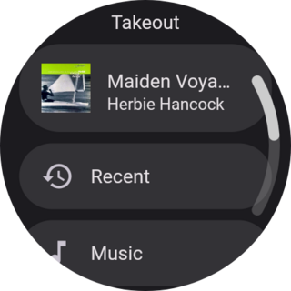
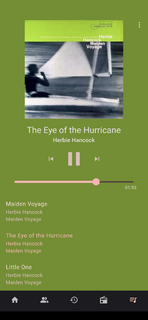
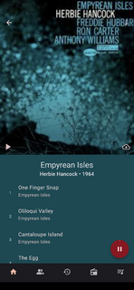
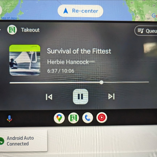
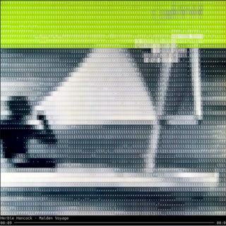
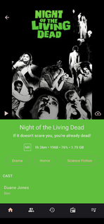
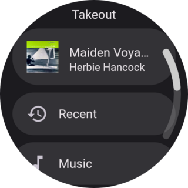
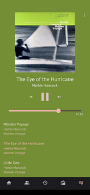
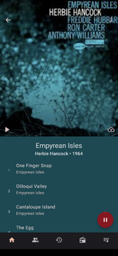
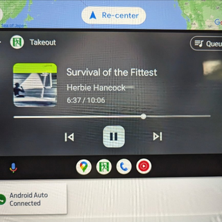
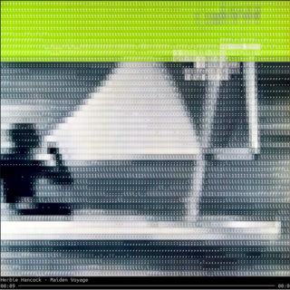
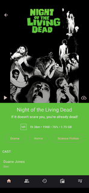